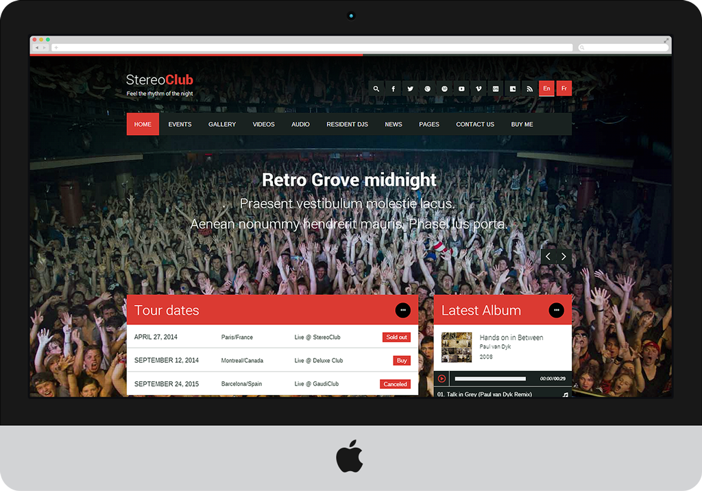
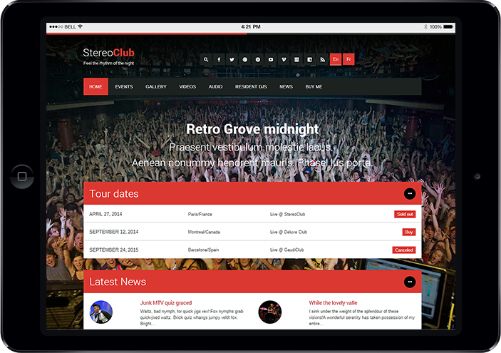
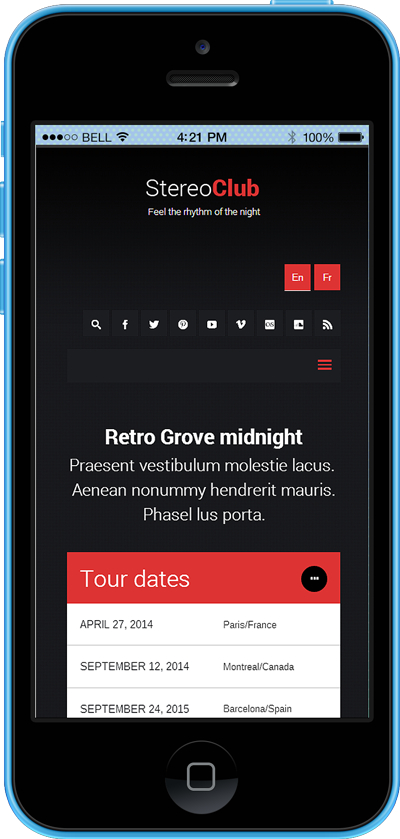

StereoClub
NightClub & Music WordPress Theme

StereoClub - Desktop Version

StereoClub - Tablet Version

StereoClub - Mobile Version
StereoClub - Desktop Version
StereoClub - Tablet Version
StereoClub - Mobile Version
StereoClub theme aren't only beautiful, they are also packed full of some amazing features!
Possibly the best feature of StereoClub is it’s device agnostic design. That means whether you’re viewing the theme on your desktop, your tablet or your smartphone, it responds and adapts delivering an optimised design for that device.
The homepage is full of options and has it’s own sidebar to place widgets in. Configure your unique introduction copy, display content from your blog & Twitter feed, enable your featured slider and portfolio modules, add widgets and display featured / recent products from your store.

I'm not a programmer, I'm just a marketing guy who blogs. WordPress makes it easy, but using the StereoClub makes it REALLY easy. If you're a serious publisher, WPlook is a no-brainer.
Beautiful themes, great support, a super community. Optimized for speed, security and results. Seriously, what else could you ask for? StereoClub rock!
We build more than just Themes. We build User Experience for both, you and your visitors. Our Themes are great to look at, set up in minutes and easy to modify. Using them doesn’t feel like work anymore.
Because we love WordPress. And because setting up your own Website should neither be painful nor expensive nor complicated. Care for every detail.